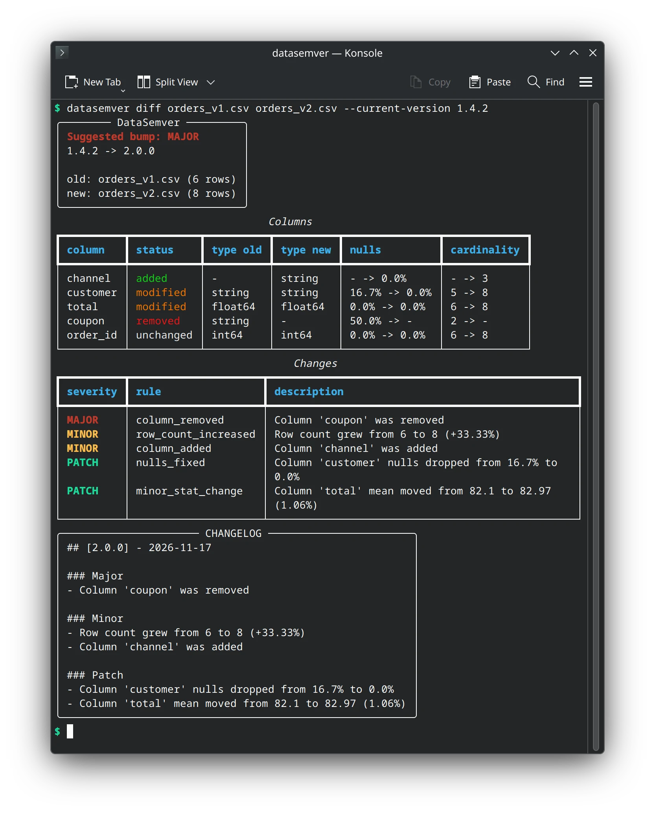

Texto
El separador se detecta, no se supone
CSV y TSV, comprimidos o no, con el separador sacado de la cabecera: coma, punto y coma, tabulador o barra. JSON en arrays y JSON Lines.
ventas.csv events.jsonl
Siete formas de usarlo, un informe
Todas llaman a la misma función, así que la respuesta nunca depende de dónde preguntes.
Código abiertoApache 2.0v0.8.2
Compara dos versiones de un dataset. DataSemver mide cada cambio con sus reglas, nombra el salto de versión que merece y escribe la entrada del changelog que explica por qué.

Panel web
Llama a la misma función que la línea de comandos, así que los dos coinciden por construcción. Este es el panel de verdad, reproduciendo una comparación grabada contra su backend.
Abrir la demo a pantalla completaCómo decide
Cada diferencia se compara con una regla, y cada regla lleva una severidad. La más alta que aparezca se convierte en el salto; las demás llegan igualmente al changelog.
La severidad vive en tu fichero de reglas, con perfiles estricto y permisivo junto a los de serie. Un cambio que ninguna regla cubre sale como no clasificado y nunca sube el salto.
Leer el catálogo de reglasDos versiones
orders_v1.csv
orders_v2.csv
en la 1.4.2
Reglas
205 coinciden
Gana la severidad más altapropone 2.0.0
Qué mide
Una columna puede reconstruirse alrededor de su media sin moverla. Estos cambios rompen a todo el que va detrás, y una comparación de esquemas y medias no ve ninguno.
Se mide con un estadístico de Kolmogórov-Smirnov sobre una rejilla de cuantiles que guarda el perfil, así que el fichero antiguo no tiene por qué estar.
El conjunto de categorías no cambia, así que contar valores distintos no ve nada. Se mide con el índice de estabilidad de la población (PSI).
Una columna de fechas se compara por dónde cae de verdad, así que un export que se desplazó, o que ahora cubre la mitad del periodo, es un cambio y no un silencio.
Con --key, las filas se emparejan en vez de resumirse. Valores sacados de la misma distribución mantienen la forma de la columna, y son otro dataset para quien hace joins contra él.
Cada desplazamiento se pesa contra lo que la muestra puede sostener: tiene que superar el valor crítico para esos tamaños además de tu umbral. Con un puñado de filas no se informa de nada, porque no hay nada que informar.
Formatos
El formato rara vez es lo que se compara. Un perfil guardado cuenta como dataset en cualquiera de los dos lados, así que se puede comparar con la versión anterior ya desaparecida.
Texto
CSV y TSV, comprimidos o no, con el separador sacado de la cabecera: coma, punto y coma, tabulador o barra. JSON en arrays y JSON Lines.
ventas.csv events.jsonl
Arrow en disco
Parquet y Feather declaran el tipo de cada columna, así que un código postal sigue siendo texto y conserva su cero inicial.
.parquet .feather .arrow
Libros de Excel
La hoja después de #, o la primera si no se nombra ninguna. Necesita el extra excel.
trimestral.xlsx#T3
Bases de datos
Una URL de conexión con la tabla después de #. La contraseña nunca llega al informe, a los logs ni a un nombre de fichero.
sqlite:///app.db#customers
Motores
El motor por defecto carga un dataframe. --engine duckdb agrega sobre el fichero, y duckdb-sketch además estima la rejilla de cuantiles, el único número que cuesta una pasada completa.
Parquet, 380 MB
CSV, 1,21 GB
Tiempo real y memoria residente máxima de todo el proceso, perfilando el mismo fichero con cada motor.
duckdb responde lo mismo que pandas. El sketch tiene nombre propio y nunca es un atajo automático: con ocho filas responde 1 donde el cálculo exacto da 1,35, justo donde un resultado es más fácil de comprobar a mano.
Define DATASEMVER_DUCKDB_MEMORY_LIMIT y lo que no quepa se vuelca a disco en lugar de fallar.
# la mitad de memoria, las mismas respuestas datasemver diff old.parquet new.parquet \ --engine duckdb
Perfiles
63,6MB
el dataset
2,9KB
su perfil
21.916:1
más pequeño
Una comparación lee un perfil: las columnas, sus tipos, su proporción de nulos, una rejilla de cuantiles y los recuentos por categoría. Cabe de sobra junto al dataset en el repositorio, y entonces la versión anterior no hace falta descargarla, ni siquiera que exista.
El pie de un Parquet puede sustituir a la lectura completa con --schema-only; cualquier comparación contra ese perfil avisa de que no se revisó ninguna distribución.
# escríbelo una vez, junto a los datos datasemver profile v3.parquet # compara contra él después, sin el fichero datasemver diff v3.profile.json v4.parquet
Formas de usarlo
datasemver diff old.csv new.csvHecha con typer y rich. Añade --json cuando la respuesta la lee un script y no una persona.
from datasemver import analyzeDos rutas, o dos perfiles que ya tienes en memoria cuando los datos vienen de una consulta.
pip install "datasemver[web]"Una herramienta local sin autenticación ni límite de peticiones: déjala en la interfaz de loopback.
uses: IzanVil/datasemver@v0.8.2Publica el salto en cada pull request, reescribiendo un único comentario. Pasado tu umbral rechaza el merge, después de explicar por qué.
datasemver dvc --rev HEAD~1Compara los datasets que DVC marca como cambiados entre dos revisiones, desde la versión registrada junto a cada uno.
postgresql://…/db#customersSQLite no necesita driver; PostgreSQL y MySQL usan el extra sql.
linux · windows · macosUn ejecutable por plataforma con su propio Python, bases de datos y libros de Excel incluidos.
Instalación
Python 3.10 a 3.14, con tipos y sin acceso a la red en ejecución. Las versiones se publican desde CI con Trusted Publishing y procedencia firmada, así que no existe ningún token de larga duración.
sqlexcelduckdbweb# lee el salto desde un script BUMP=$(datasemver diff old.csv new.csv --json | jq -r '.bump') # añade la entrada al principio de tu changelog datasemver diff old.csv new.csv --output CHANGELOG.md \ --current-version "$(cat VERSION)" # rechaza un cambio que rompe datasemver diff old.csv new.csv --fail-on major # qué filas cambiaron, no solo si cambió la forma datasemver diff old.csv new.csv --key id # guarda la versión que ha calculado datasemver diff old.csv new.csv --write-version \ --current-version 1.4.2
0 sin problemas1 rechazado2 no pudo ejecutarse
Preguntas
--rules; los perfiles estricto y permisivo vienen junto a los de serie.--engine duckdb. Pon un límite de memoria y lo que no quepa se vuelca a disco.Una instalación, dos ficheros y una respuesta que puedes poner en una pull request.